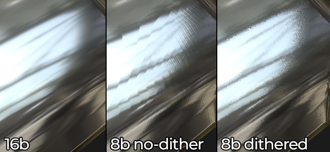

Does the Bakers support texture dithering and if so when is it applied ?
Dithering is applied to avoid banding in 8bit normal maps for example :

Dithering is automatically applied in the following situations :
Dithering is an option that can be enabled or disabled during the export process. It is only applied when exporting to 8bit file format for the Normal, Displacement and Height channel.
Dithering is not supported at the moment.